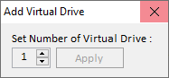

|
|
| Home |
| F.A.Q |
Frequently Ask Question (F.A.Q)
QUESTION :
What is uDiscMounter?
ANSWER :
uDiscMounter is a tool designed to manage virtual drives and mount disk image files on Windows operating systems. The program allows users to access the contents of image files without the need for physical hardware such as CD/DVD.
QUESTION :
What file formats are supported by uDiscMounter?
ANSWER :
uDiscMounter supports almost all widely recognized CD/DVD image file formats, including ISO, BIN, IMG, CIF, NRG, MDS, CCD, BWI, ISZ, DMG, DAA, UIF, HFS and many more.
QUESTION :
Does uDiscMounter require additional hardware?
ANSWER :
No, uDiscMounter works completely virtually, so it does not require any additional hardware such as a physical CD/DVD drive.
QUESTION :
Is uDiscMounter safe to use?
ANSWER :
Yes, uDiscMounter is designed to ensure the safety of your data. Be sure to download this app from the official source to avoid versions that have been modified by third parties.
QUESTION :
Is uDiscMounter compatible with all versions of Windows?
ANSWER :
uDiscMounter is compatible with Windows Vista, 7, 8, 10, and 11. For older versions, support may be limited.
| Download Link | ||
| Download uDiscMounter 25.1 | ||
| Download | x64 x86 | 713 Kb |
| Support Windows Vista/7/8/8.1/10/11 | ||
| Support udiscmounter@gmail.com |
| How to Open/Add Files | |
| Drag & Drop | |
| Keyboard (CTRL + O) | |
| How to Add Virtual Drives | |
|  | |
| 1. | Click <Add Virtual Drive> |
| 2. | Select number of virtual drive. |
| 3. | Click Apply |
| 4. | Restart your computer |
| Donate | |
| Buy me a coffee | |
Copyright (c) 2015 - 2025 Ari Project. All Rights Reserved.